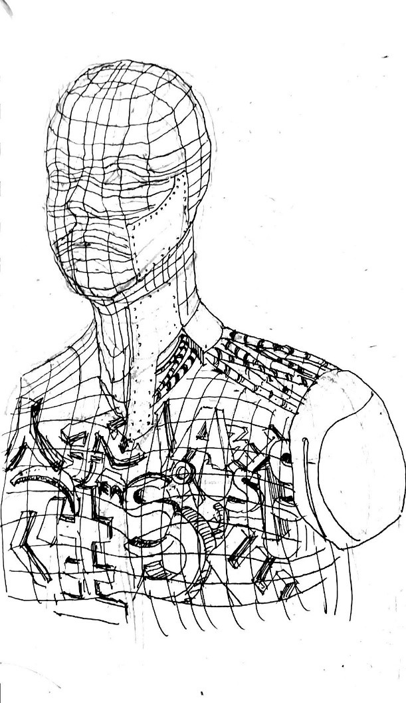
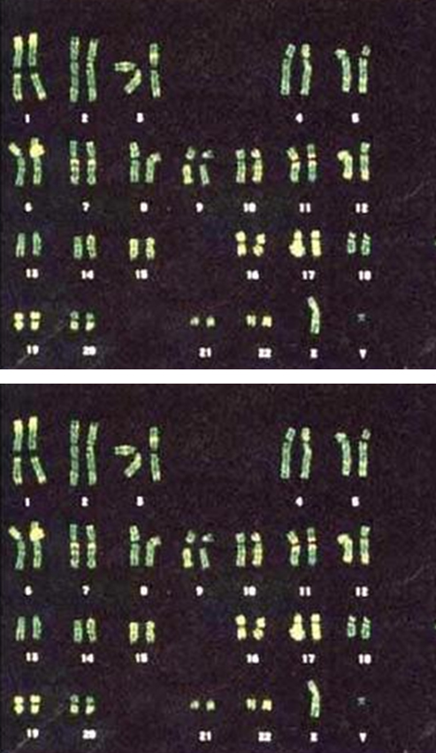
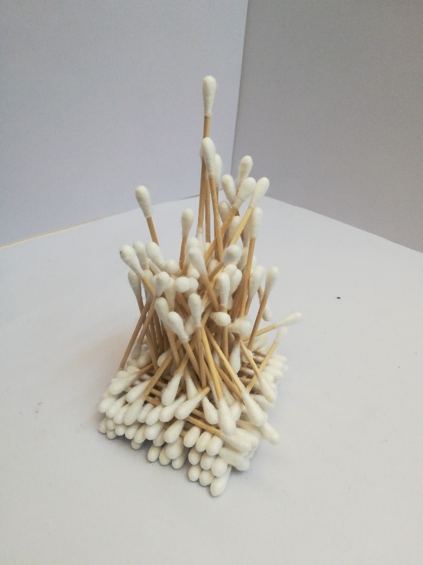
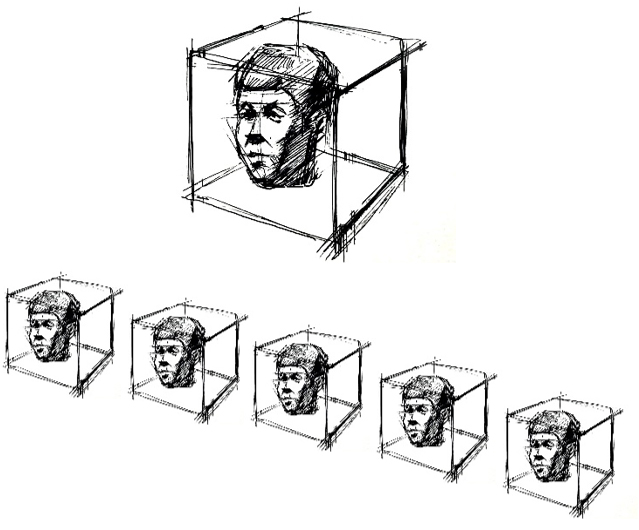

新媒体艺术装置设计（2020）
装置设计
一 身体/身份
混乱的肖像
铜丝，铜片，废弃LED灯箱，铜版字
43cm×21cm×60cm
制作方案：
①用一小块橡皮泥随意塑成人型
②将其胸部以上部分，等比放大为与正常成人人胸部以上部分等大的模型雕塑
③用铜丝网出人物模型，在人物内部用废弃的LED文字灯箱和废弃铜版字填充
④在表面覆盖上几片铜片
作品阐释：
等比放大橡皮泥，意味着作品中有用手随意挤压、捏握的痕迹。铜丝与铜片的组合使整个人像呈现支离破碎的感觉。用废弃的不明意义的作为广告招牌的废弃霓虹灯或铜版文字作为内填物，混乱零散。但混乱的文字，曾经也有着其本身的含义，在随意的堆叠中，也能进行重新排布，发现新的重组后的内涵。整件雕塑虽然看上去支离破碎，随意不规整，确是一个立体的和人体等尺寸的半身肖像。人们可以和这个和自己比例相同的肖像相互凝望，这样的凝望可以让人想到自身本身也是这样充满了混乱，用一个看似亮丽完整的身体，扮演着许许多多的身份。解释了人们脱离一些外在后，所显露的混沌与秩序的纠缠。
二 场所
家园？
树脂，颜料，白色光源，黄色单色光源
球体尺寸：200cm×200cm×200cm
制作方案：
②在两个球体上分别用勾勒出地球和月球的地形地貌。
③对绘制有地球地形地貌的球体，按照月球卫星图像的特征进行着色。
④对绘制有月球地形地貌的球体，按照地球卫星图像的特征进行着色。
⑤将两个球体并排放置于一个不透光的空房间中央。
⑥在房间内装配纯黄单色光源，在两个球体上部装配白色光源。
⑦打开黄色单色光源，每隔一段时间打开白色光源，开启一段时间后关闭白色光源，并重复该过程。
作品阐释：
当观众在黄色单光源下，很容易看出哪个是地球，哪个是月球，因为两个球体表面的颜色被单色光源所剥夺，所看到的两个球体表面是在黄光下的黑白影像，观众根据自己熟悉的地形便能看出月球与地球的区别。而当白色光源打开后，被剥夺的色彩重新还给了两个球体，面对以蓝色和绿色填充的月球和以白色和灰色填充的地球，哪个才更能唤起人们对家园的定义？
三 技术和媒介
迭代
相片，高清影像
尺寸可变
制作方案：
①取健康人体外周血淋巴细胞进行培养
②取部分细胞，用吉姆萨等染料进行染色体显带，并进行显微照相
③用铱-192作为放射源进行照射
④对淋巴细胞进行传代培养，每隔72h取部分细胞进行染色体显带并进行显微摄影
⑤在传代培养过程中，对细胞的复制过程进行延时摄影
⑥应用核型分析系统对每次显微摄影结果进行染色体核型配对排列
⑦选取染色体分散良好、形态清晰的配对排列结果，将核型排列整齐
⑧对照片进行着色处理后，展示一组照片和延时摄影的视频
作品阐释：
染色体是存储人类遗传物质的细胞结构。染色体显带技术可以标志染色体中的特定带状片段，通过带状的前后变化可以使人们清晰地看见染色体前后的形态变化。用铱-192作为放射源进行照射，则模拟了核电站泄漏、放射源丢失等情况所带来的对人体的核辐射，将人体细胞置于这种环境下进行传代培养，细胞中染色体发生畸变，造成形态发生变化的概率会大大提高。将延时摄影拍摄的细胞分裂迭代的过程与细胞中染色体发生畸变的情况一并展示，让核辐射对人体的影响在微观层面上直观可视化，使人们去反思核的使用对人类，乃至整个生态系统的影响。
四 信仰
金字塔
钢条，颜料
130cm×130cm×158cm
（钢条尺寸130cm×7cm×7cm）
制作方案：
①将钢条用颜料漆成不同深浅的灰色
②用钢条堆出平稳的底座
③在堆出的底座上插入若干钢条，使整体形成类似金字塔的形状，并保持整体结构的稳固
作品阐释：
底部的钢条秩序井然地堆成一个基座，而上面的钢条看似混乱却构成了整体的稳固。金字塔型是最稳固的一种结构，在秩序与混乱中，仍然形成了一种畸形的金字塔，簇拥着中央最高的钢条。金字塔本身也代表着古埃及人原始的信仰。中央最高的钢条直指向上，给人以仰望感。“信仰”中的“仰”字，代表的是一种敬慕感。钢条的堆砌也正如人类对精神启示的不断构建，直耸入云，指引着人类前行的方向。
五 时间
置换
铜头像，玻璃缸，硝酸银，浓硝酸，蒸馏水
单个玻璃缸尺寸：25cm×25cm×25cm
制作方案：
①使用蒸馏水与硝酸银配置5种浓度由低至高的硝酸银溶液
②将5个铜像分别立在5个玻璃缸中
③5个玻璃缸分别加满5种不同浓度的硝酸银溶液，并分别滴入几滴浓硝酸
④按照溶液浓度由低到高，并排由左向右放置。盖上盖子，静置
作品阐释：
将铜像放入硝酸银溶液中，铜会与硝酸银中的银离子发生置换反应，银离子会变成银，稀松地附着在铜像表面，而铜像的铜则会变成铜离子进入溶液中。由于铜离子的生成，溶液会逐渐由原来的无色变成蓝色。硝酸银的浓度不同，则这个反应发生的速度快慢也不同，铜像表面产生的银的多少也不同。随着时间的推移，铜像表面附着的银逐渐增多，铜像也会逐渐变得难以辨认。而并排放置的5个装置，则由于其中硝酸银溶液浓度的不同，呈现出了铜像表面附着的银由左向右逐渐增多的现象，好像将不同时间的画面定格在了同一个空间内。